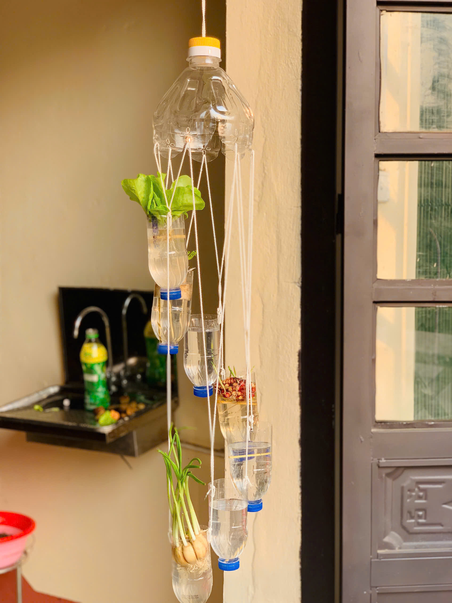
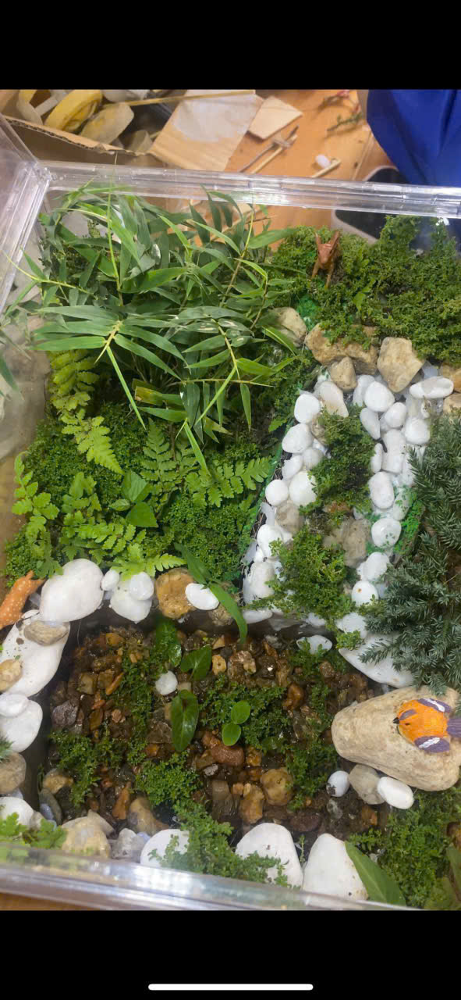
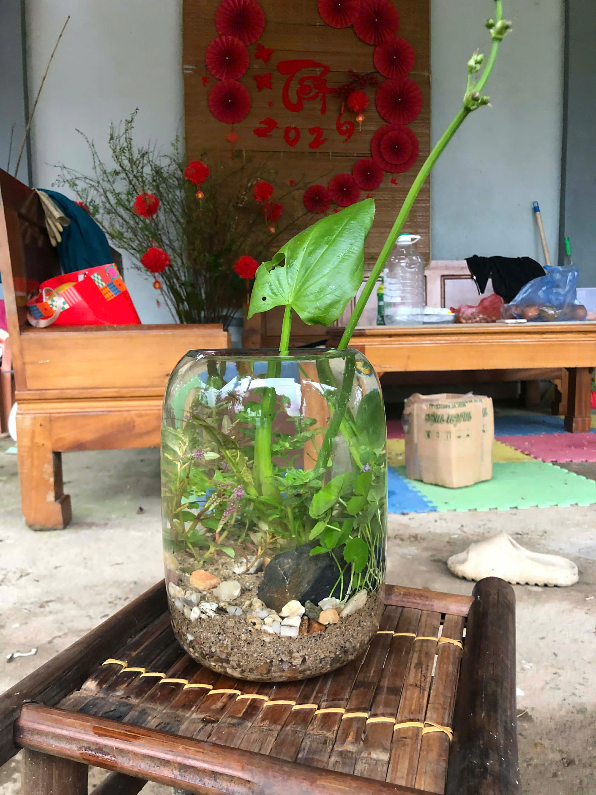
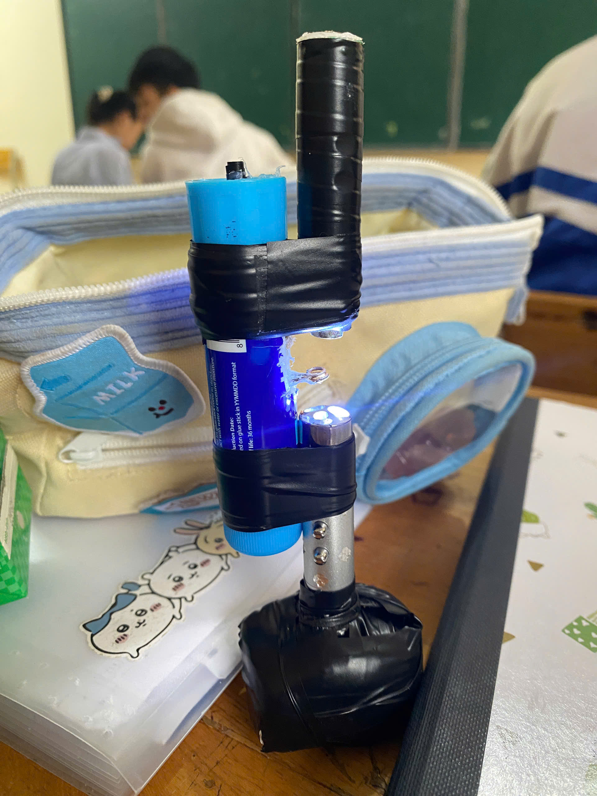
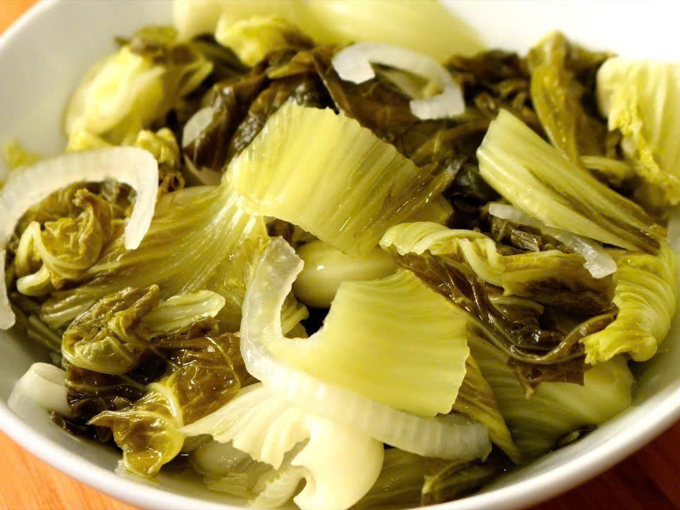

Hệ thống thủy canh.

Mô hình hệ sinh thái rừng.

Mô hình hệ sinh thái dưới nước.

Kính hiển vi mini tự chế dùng để quan sát vi sinh vật.

Dưa muối – minh họa cho hệ vi sinh vật trong quá trình lên men tự nhiên.